Tema 6 · Diapositivas «Respuesta en frecuencia y filtros»
Diagramas de Bode y filtros básicos
Desde cero
Un circuito con condensadores responde distinto según la frecuencia de la señal. Un condensador es un circuito abierto en continua y casi un cortocircuito a frecuencia muy alta, y entre medias hace cosas interesantes. La función de transferencia $G(s)=\dfrac{V_{out}}{V_{in}}$ describe todo eso. Al sustituir $s=j\omega$ obtienes un número complejo que depende de $\omega$: su módulo te dice cuánto amplifica y su fase cuánto retrasa.
El diagrama de Bode dibuja el módulo en decibelios ($20\log|G|$) y la fase en grados, ambos frente a la frecuencia en escala logarítmica. La gran ventaja de pasar a dB es que los productos se convierten en sumas, así que el diagrama de una función compleja es la suma de los diagramas de sus factores sencillos, todos rectas.
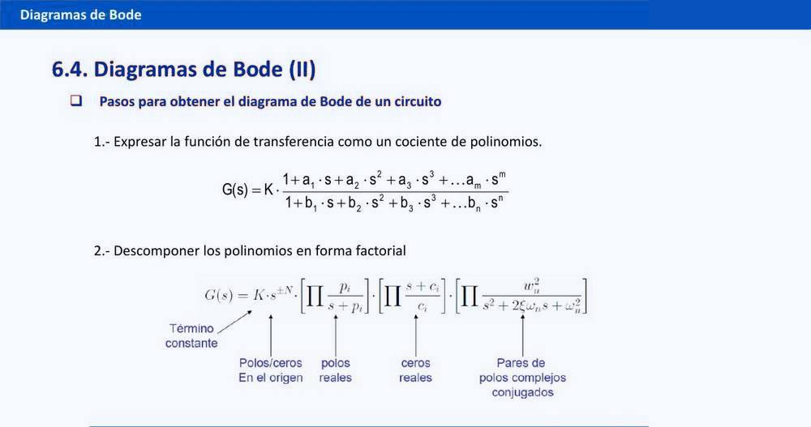
Receta para dibujar un Bode, paso a paso
- Factoriza numerador y denominador para ver los ceros y los polos.
- Normaliza: cada factor debe quedar como $(1+s/\omega_c)$, sacando fuera las constantes. Todas las constantes se juntan en un único término $K$.
- Sustituye $s=j\omega$.
- Dibuja cada factor por separado (tabla de abajo) y súmalos. En dB, el producto es una suma; en fase, también.
- Comprueba: la ganancia a baja frecuencia debe ser $20\log K$ (sin factores en el origen) y la pendiente al final debe ser la suma de pendientes.
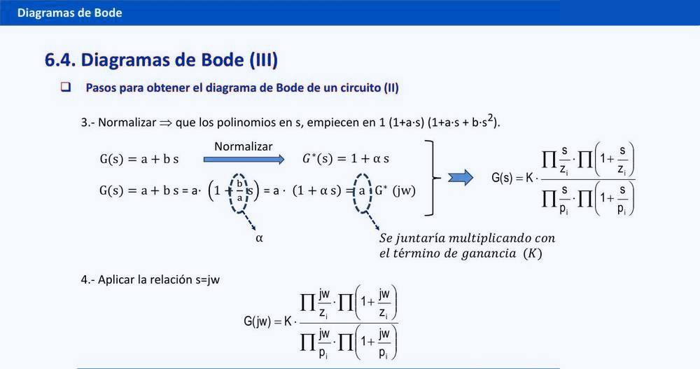
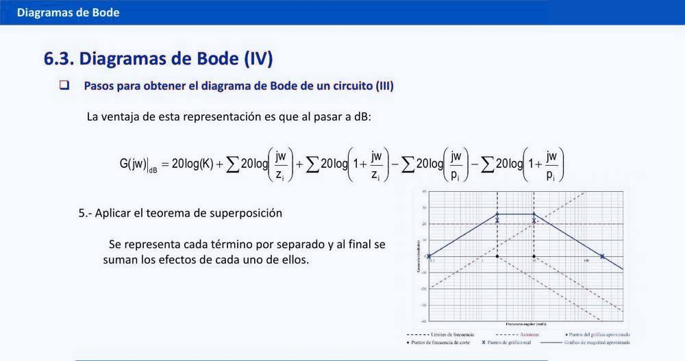
Los factores básicos: la tabla que hay que saberse
| Factor | Módulo (dB) | Fase |
|---|---|---|
| Constante $K$ | Recta horizontal en $20\log|K|$ | 0° si $K>0$, 180° si $K<0$ |
| Cero en el origen $j\omega a$ | Pasa por 0 dB en $\omega=1/a$ y sube $+20$ dB/década | +90° |
| Polo en el origen $\dfrac1{j\omega a}$ | Pasa por 0 dB en $\omega=1/a$ y baja $-20$ dB/década | −90° |
| Cero real $1+j\omega a$ | 0 dB hasta $\omega_c=1/a$ y luego $+20$ dB/década | 0° → +90°, vale +45° en $\omega_c$ |
| Polo real $\dfrac1{1+j\omega a}$ | 0 dB hasta $\omega_c=1/a$ y luego $-20$ dB/década | 0° → −90°, vale −45° en $\omega_c$ |
| Polos complejos $\dfrac1{1+2\zeta\frac{j\omega}{\omega_n}+\left(\frac{j\omega}{\omega_n}\right)^2}$ | 0 dB hasta $\omega_n$ y luego $-40$ dB/década, con pico si $\zeta<0{,}707$ | 0° → −180° |
| Elevar a $n$ el factor | Multiplica pendientes y fases por $n$ | Multiplica por $n$ |
Dos trampas clásicas
- En $\omega_c$ la curva real está 3 dB por debajo (polo) o 3 dB por encima (cero) de la asíntota. Es la «frecuencia de corte»: el módulo vale $\sqrt2$ veces el de baja frecuencia, la potencia cae a la mitad.
- La fase de un factor de primer orden no es una recta: vale la mitad de su salto en $\omega_c$ y se aproxima por una recta que empieza una década antes y acaba una década después de $\omega_c$ (−45°/década).
Cada factor con su diapositiva
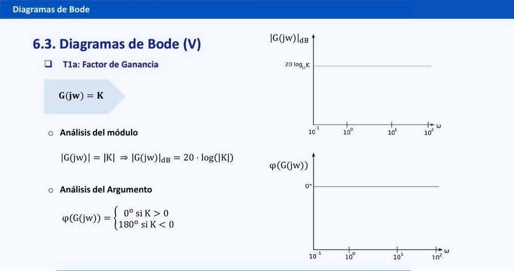
0 y 180° si K<0." loading="lazy" width="1000" height="563">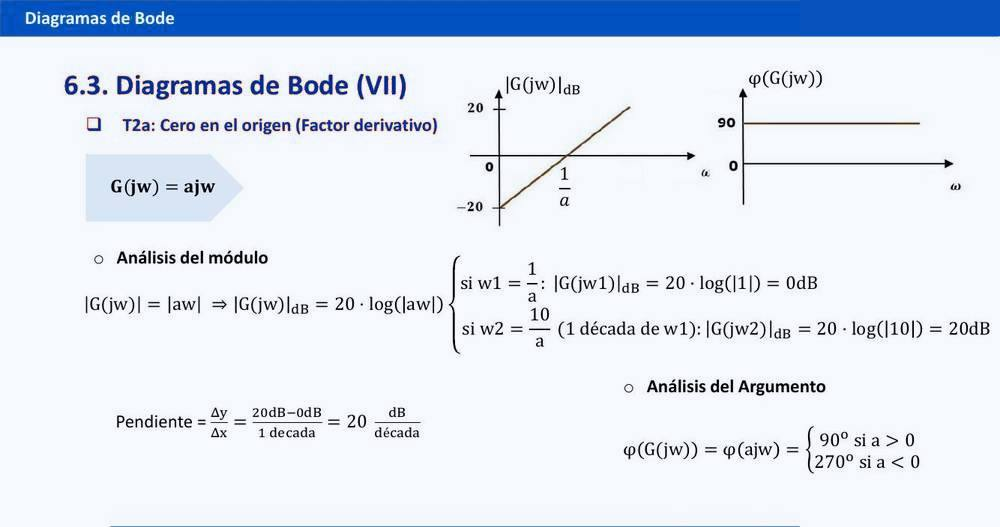
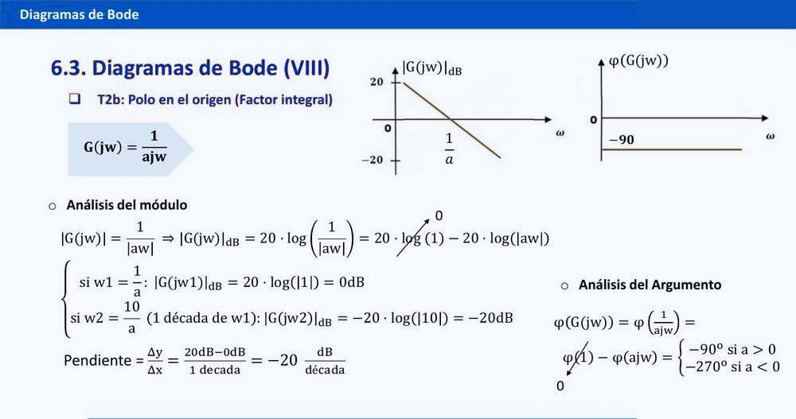
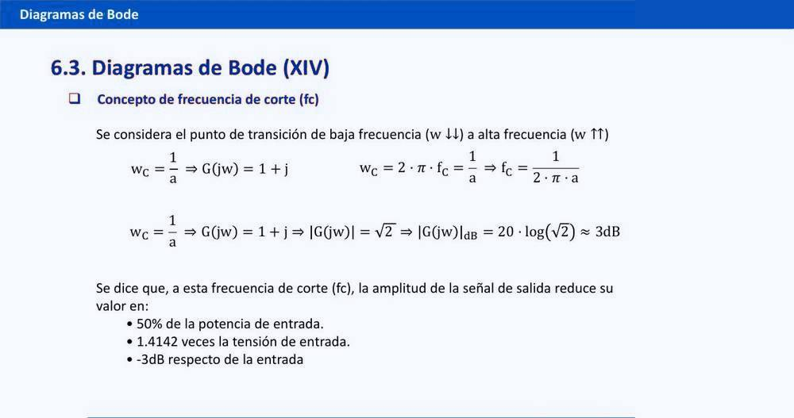
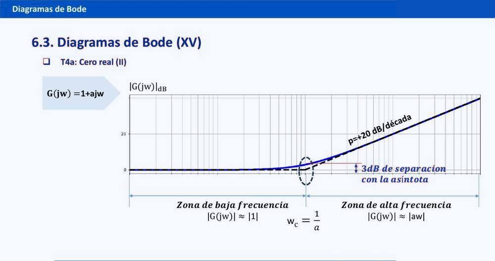
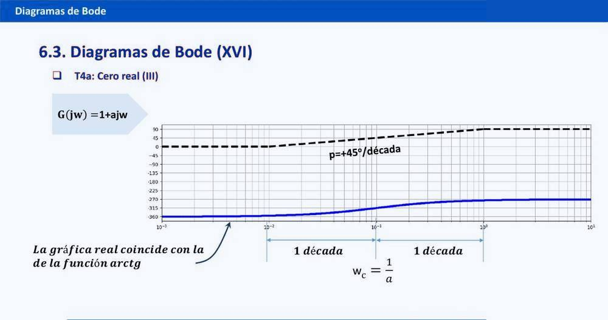
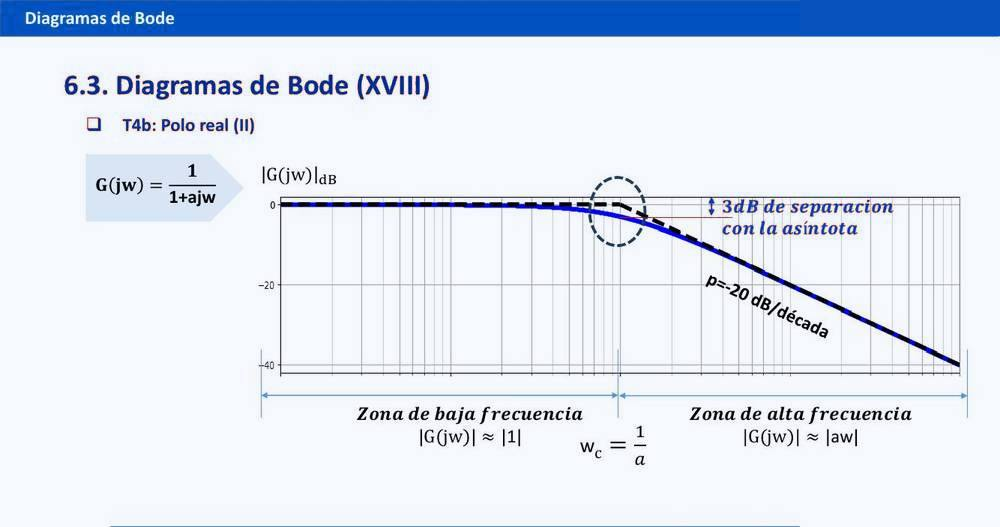
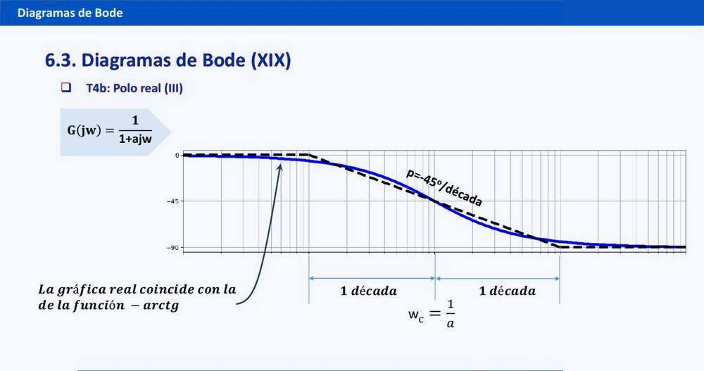
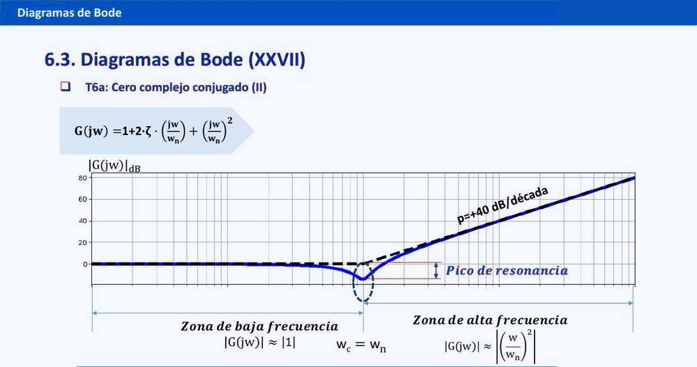
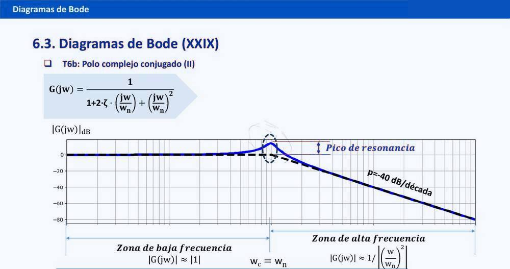
pico de r" loading="lazy" width="1000" height="563">Ejemplo completo de la clase, desde cero
Dibuja el Bode de $G(s)=\dfrac{10^4(s+40)}{s^2+410s+4000}$.
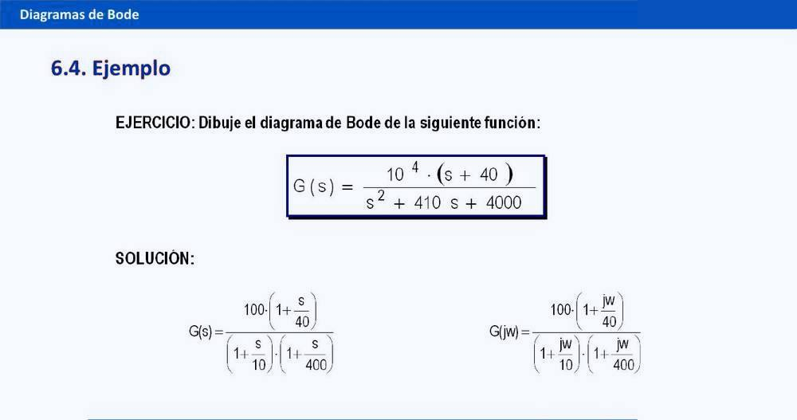
- Factoriza: $(s+10)(s+400)=s^2+410s+4000$ ✓. Hay un cero en 40 rad/s y polos en 10 y 400 rad/s.
- Normaliza: $\dfrac{10^4(s+40)}{(s+10)(s+400)}=\dfrac{10^4\cdot40\,(1+s/40)}{10\cdot400\,(1+s/10)(1+s/400)}=100\,\dfrac{1+s/40}{(1+s/10)(1+s/400)}$.
- Ganancia constante: $K=100\Rightarrow20\log100=40$ dB.
- Dibuja los cuatro factores: recta de 40 dB, polo en 10 rad/s ($-20$ dB/dec), cero en 40 rad/s ($+20$ dB/dec) y polo en 400 rad/s ($-20$ dB/dec).
- Suma las pendientes por tramos: hasta 10 rad/s, 0; de 10 a 40, $-20$; de 40 a 400, $0$ (el cero cancela el polo); desde 400, $-20$ dB/década.
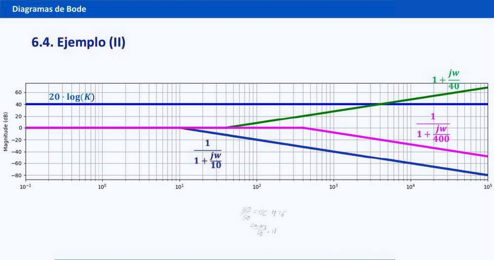
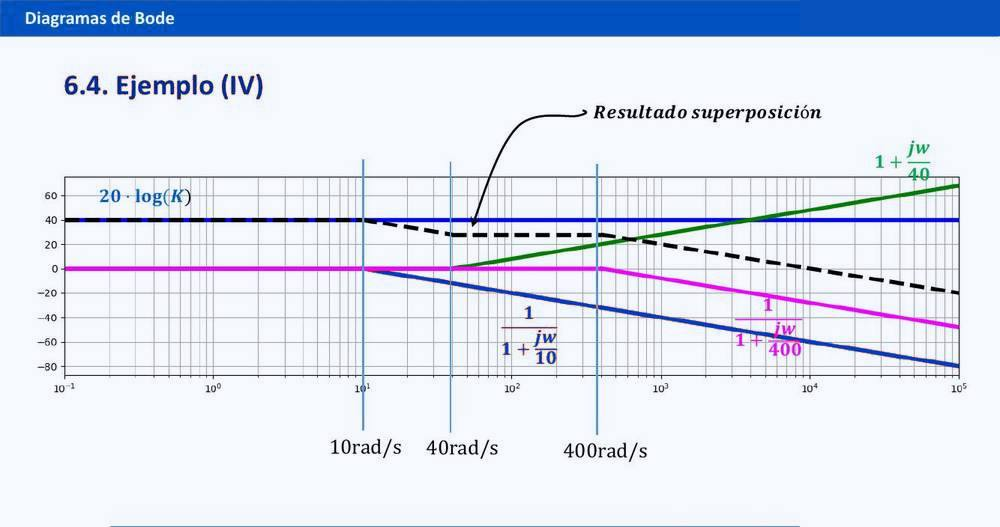
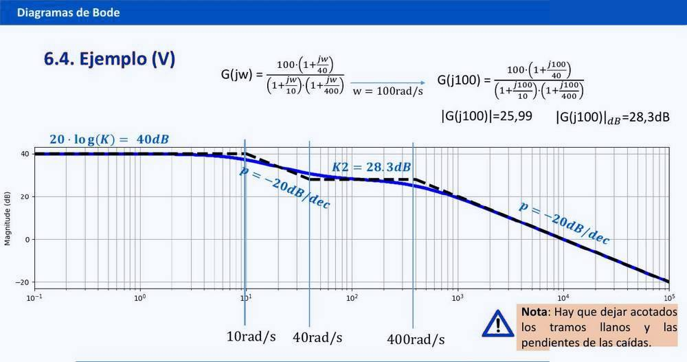
Qué pasa si añades un factor $j\omega$
Multiplicar por $j\omega$ añade un cero en el origen: toda la curva se inclina $+20$ dB/década y se desplaza para pasar por el punto $(\omega=1$ rad/s, $20\log K)$. En el ejemplo, $G(s)\cdot j\omega$ sube con +20 dB/década hasta 10 rad/s, se aplana entre 10 y 40, vuelve a subir entre 40 y 400 y se aplana a partir de ahí en 80 dB.
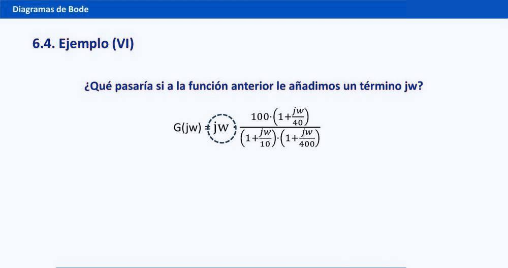
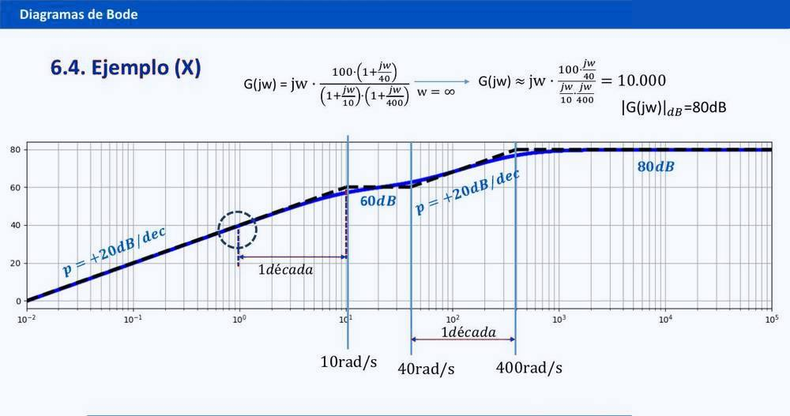
Bode builder
Prueba tú: mueve las frecuencias del cero y de los polos y observa cómo se construye el diagrama.
Simulador · constructor de Bode
6.5 Filtros básicos de primer orden
El filtro más simple es una red RC. La frecuencia de corte es la frecuencia a la que la ganancia cae 3 dB, y su fórmula es $\omega_c=\dfrac1{RC}$, o $f_c=\dfrac1{2\pi RC}$.
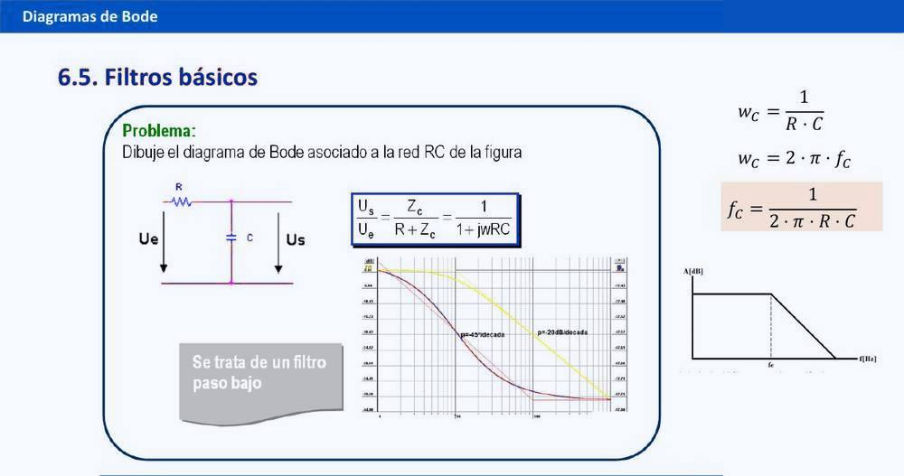
paso bajo: la salida se toma en el condensador y U_sU_e=Z_CR+Z_C=11+j RC. Deja pasar las bajas f" loading="lazy" width="1000" height="563">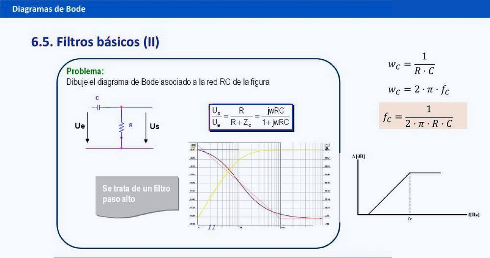
paso alto: se intercambian R y C y la salida se toma en la resistencia. U_sU_e=j RC1+j RC. Sube " loading="lazy" width="1000" height="563">Cómo reconocerlos sin calcular
Pregunta qué hace el condensador a cada extremo. Si en alta frecuencia el condensador es un cortocircuito y está a masa (paso bajo) o en serie con la señal (paso alto), ya sabes qué pasa. A baja frecuencia es un circuito abierto: en el paso alto bloquea la señal; en el paso bajo no pasa nada y la salida iguala a la entrada.
▶Vídeos para reforzar este tema
- Trazado del diagrama de Bode de un sistema de primer orden Un polo: el caso más sencillo.
- DIAGRAMA DE BODE Ejercicios [Asintótico y Matlab] #004 Ejercicios con asíntotas.
Los he elegido por su título y su tema, sin haberlos visto: comprueba que el enfoque coincide con el de tu profesor. Se abren en YouTube.
Tema 6 · Para dominar el examen
Bode a fondo: dibuja cualquier diagrama sin dudar
Desde cero
Hay una sola idea detrás de todo Bode: cada factor de la función de transferencia dobla la gráfica en un punto concreto, y en ese punto cambia la pendiente en $\pm20$ dB por década. Un polo la baja 20 dB/década, un cero la sube 20 dB/década. Si sabes dónde están los polos y los ceros, y de dónde parte la gráfica, la dibujas sin calcular nada más. La fase sigue la misma lógica: cada polo resta 90° (repartidos en dos décadas, de $\omega_c/10$ a $10\,\omega_c$), cada cero los suma.
Tarjeta de repaso: lo que cambia en cada punto
| Factor | Pendiente del módulo | Fase total que aporta | Dónde actúa |
|---|---|---|---|
| Polo real $\dfrac1{1+j\omega/p}$ | baja 20 dB/dec | −90° | $\omega=p$ (fase: de $p/10$ a $10p$) |
| Cero real $1+j\omega/z$ | sube 20 dB/dec | +90° | $\omega=z$ |
| Integrador $\dfrac1{j\omega}$ | −20 dB/dec desde el principio | −90° siempre | pasa por 0 dB (si $K=1$) en $\omega=1$ |
| Derivador $j\omega$ | +20 dB/dec desde el principio | +90° siempre | pasa por 0 dB (si $K=1$) en $\omega=1$ |
| Polos complejos ($\zeta$, $\omega_n$) | baja 40 dB/dec | −180° | $\omega=\omega_n$, con pico si $\zeta<0{,}707$ |
| Constante $K$ | nada, sólo sube o baja todo | 0° ($K>0$) o 180° ($K<0$) | — |
Receta de 6 pasos, sin saltarse ninguno
- Normaliza. Que cada factor sea $(1+s/\omega_c)$ o $s$ (o $1/s$). Las constantes salen fuera y se multiplican en una sola $K$. Ejemplo: $s+10=10\,(1+s/10)$.
- Haz una lista ordenada de todas las frecuencias de corte, de menor a mayor, anotando si es polo (↓) o cero (↑).
- Punto de partida. Si no hay factores en el origen: la gráfica empieza plana en $20\log|K|$. Si hay $n$ integradores: empieza con pendiente $-20n$ y pasa por el punto $(\omega=1,\ 20\log|K|)$. Si hay $n$ derivadores: pendiente $+20n$ y el mismo punto.
- Recorre la lista. En cada frecuencia, suma $-20$ (polo) o $+20$ (cero) a la pendiente. Para saber el valor, multiplica la pendiente por el número de décadas del tramo: $\Delta\text{dB}=\text{pendiente}\times\log_{10}\dfrac{\omega_2}{\omega_1}$.
- Suaviza. En cada frecuencia de corte, la curva real queda 3 dB por debajo (polo) o por encima (cero) de la asíntota, si las frecuencias están separadas. Si dos están muy cerca, los efectos se suman.
- Fase. Dibuja por separado la fase de cada factor (rampa de ±90° en dos décadas, centrada en $\omega_c$) y súmalas. Comprueba que el valor final es $90°\times(\#\text{ceros}-\#\text{polos})$.
Los cinco errores que más puntos cuestan
- Olvidar normalizar: $\dfrac{10}{s+10}$ vale 1 (0 dB) en continua, no 10 (20 dB).
- Dibujar la pendiente en dB/octava o en dB/década equivocada. En el examen se pide por década.
- Poner la frecuencia de corte en $\omega=a$ y no en $\omega=1/a$ para el factor $1+aj\omega$.
- Dibujar la fase de $K/(j\omega)$ como 0°: el integrador aporta −90° desde el principio.
- Olvidar que un factor repetido, $(1+j\omega/p)^n$, multiplica por $n$ la pendiente y la fase.
Factores repetidos: la misma idea, multiplicada por $n$
Si un factor está elevado a la $n$, todo lo que aporta se multiplica por $n$: la pendiente pasa a ser $\pm20n$ dB/década, y la fase total $\pm90n$°. Las diapositivas lo muestran con $n=2$ (pendiente de 40 dB/década y fase de 180°).
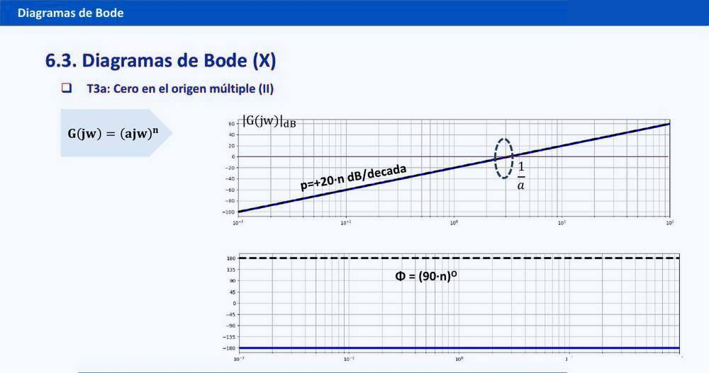
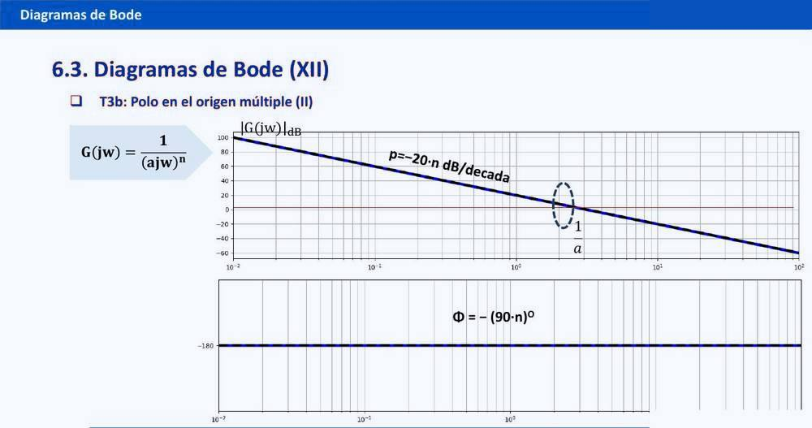
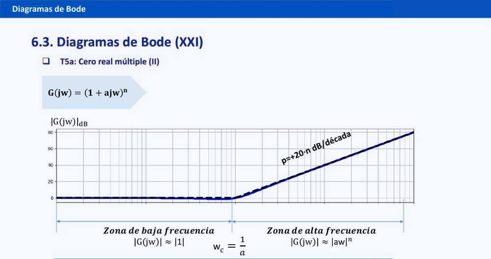
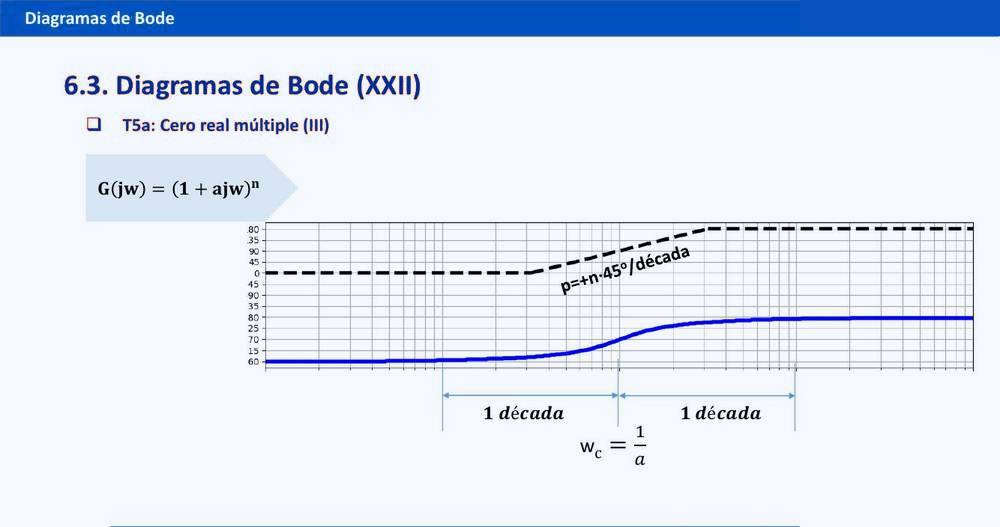
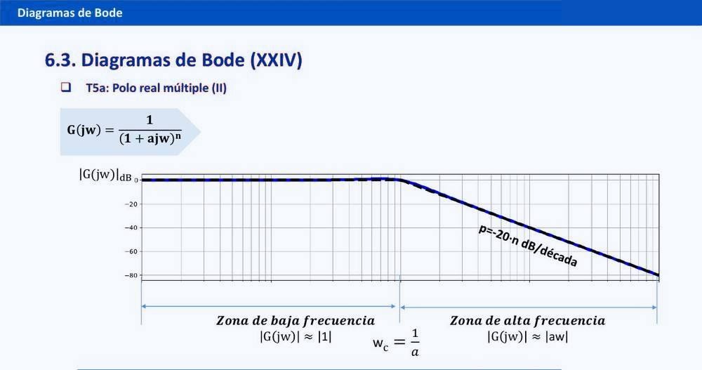
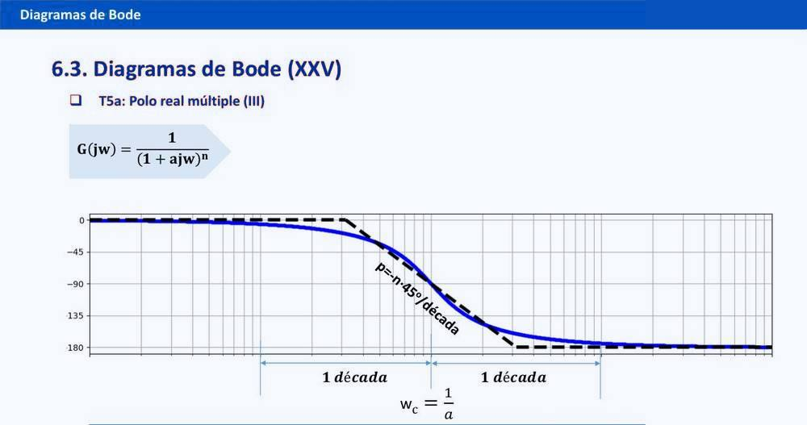
Cómo se suma todo: el ejemplo de la clase, con la fase incluida
En el ejemplo $G(s)=\dfrac{10^4(s+40)}{s^2+410s+4000}$ ya viste el módulo. Estos dos pasos de la clase muestran la idea de «las frecuencias de corte separan regiones».
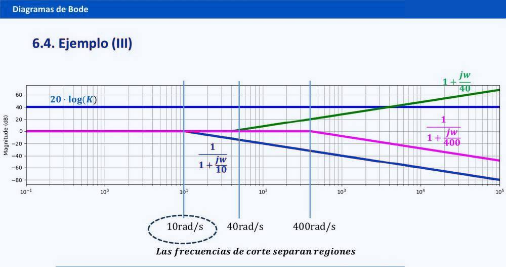
¿Y si multiplicas la función por $j\omega$? Aparece un cero en el origen: toda la gráfica se inclina +20 dB/década y el nivel de cada tramo cambia.
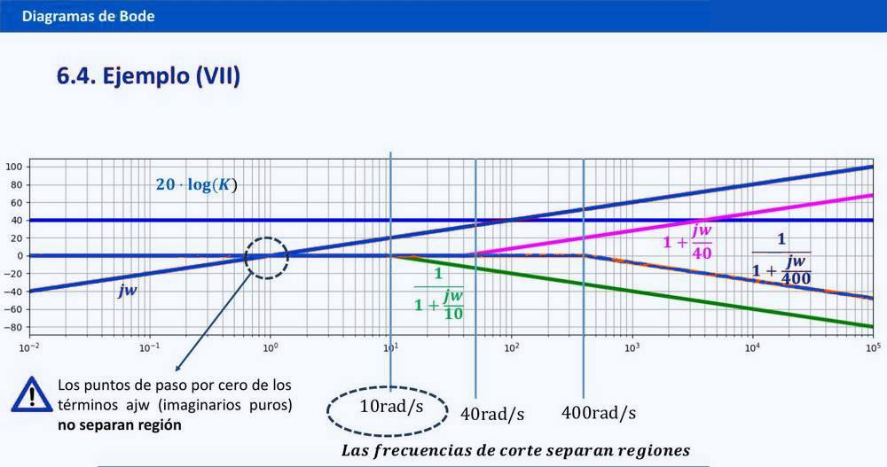
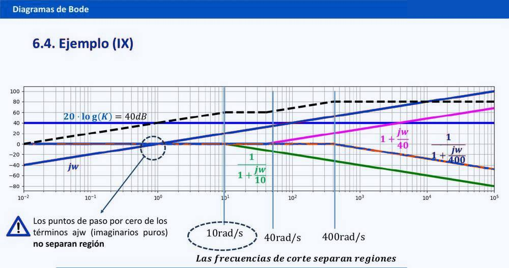
Polos complejos: el efecto del factor de amortiguamiento $\zeta$
Un factor de segundo orden $\dfrac{1}{1+2\zeta\frac{s}{\omega_n}+\frac{s^2}{\omega_n^2}}$ tiene dos polos que pueden ser reales ($\zeta\ge1$) o complejos ($\zeta<1$). El parámetro $\zeta$ decide si la curva real tiene pico de resonancia o no. Para $\zeta<0{,}707$ el módulo sube por encima de 0 dB antes de caer:
$$M_r=\frac{1}{2\zeta\sqrt{1-\zeta^2}}\ \text{ en }\ \omega_r=\omega_n\sqrt{1-2\zeta^2},\qquad |G(j\omega_n)|=\frac1{2\zeta}$$Simulador · polos complejos y factor de amortiguamiento
Leer un Bode al revés: de la gráfica a $G(s)$
Es el ejercicio inverso y aparece mucho. El método es el de la receta, al revés:
- Nivel inicial. Si la gráfica empieza plana a $L$ dB, entonces $K=10^{L/20}$. Si empieza con pendiente $\pm20n$, hay $n$ integradores o derivadores.
- Cada cambio de pendiente es una frecuencia de corte. Si la pendiente baja 20, hay un polo ahí; si sube 20, un cero; si baja 40, dos polos coincidentes o un par complejo.
- Escribe cada factor $(1+s/\omega_c)$ en el numerador (cero) o el denominador (polo).
- Comprueba con la fase final: $90°\times(\#\text{ceros}-\#\text{polos})$.
Generador de ejercicios: practica sin parar
Pulsa «Nuevo ejercicio»: aparece una función. Dibuja en papel el módulo y la fase, y después pulsa «Ver solución» para comparar.
Práctica · dibuja el Bode de esta función
Problemas de Bode resueltos
A. Con integrador: $G(s)=\dfrac{1000}{s(s+10)(s+100)}$
Enunciado
Dibuja el módulo asintótico, da los valores de cada tramo y calcula la fase final.
1Normaliza
$s+10=10(1+s/10)$ y $s+100=100(1+s/100)$. La constante: $\dfrac{1000}{10\cdot100}=1$. Queda $G(j\omega)=\dfrac{1}{j\omega\,(1+j\omega/10)(1+j\omega/100)}$, con $K=1$ (0 dB).
2Lista de frecuencias y pendientes
Hay un integrador (pendiente inicial $-20$) y polos en 10 y 100 rad/s. Pendientes: hasta 10 rad/s, $-20$; de 10 a 100, $-40$; más allá de 100, $-60$ dB/década.
3Valores del módulo
Parte del punto $(1\ \text{rad/s},\ 0\ \text{dB})$. En 10 rad/s: $0-20\cdot1=-20$ dB. En 100 rad/s: $-20-40\cdot1=-60$ dB. Con la curva real, en $\omega=10$: $|G|=\dfrac{1}{10\sqrt2\sqrt{1{,}01}}=0{,}070$, es decir $-23{,}1$ dB (3 dB por debajo de la asíntota).
4Fase
$\varphi=-90°-\arctan\dfrac\omega{10}-\arctan\dfrac\omega{100}$. En $\omega\to0$: −90°. En $\omega=10$: $-90-45-5{,}7=-140{,}7°$. En $\omega=100$: $-90-84{,}3-45=-219{,}3°$. Final: $-90-90-90=-270°$ (tres polos, ningún cero: $-90\cdot3$).
Resultado
Solución
Módulo: $-20$ dB/dec hasta 10, $-40$ hasta 100 y $-60$ después, con $0$ dB en 1 rad/s, $-20$ dB en 10 y $-60$ dB en 100. Fase de −90° a −270°.
B. Derivador con polo: $G(s)=\dfrac{10\,s}{s+100}$
Enunciado
Calcula el módulo asintótico y di qué tipo de filtro es.
1Normaliza
$\dfrac{10s}{100(1+s/100)}=\dfrac{0{,}1\,s}{1+s/100}$, con $K=0{,}1$ ($-20$ dB), un cero en el origen y un polo en 100 rad/s.
2Módulo
La parte $0{,}1\,j\omega$ vale $0{,}1$ en $\omega=1$: pasa por $(1,\ -20\ \text{dB})$ con $+20$ dB/dec. En $\omega=100$ vale $-20+40=+20$ dB. Desde 100, el polo cancela la pendiente: queda plano en $+20$ dB, que es $|G|=10$, el valor de $s\to\infty$.
3Fase
Empieza en $+90°$ (cero en el origen), vale $+45°$ en 100 rad/s y termina en $0°$ (un cero y un polo: $90-90$).
4Tipo de filtro
Atenúa las bajas frecuencias y deja pasar las altas con ganancia 10: es un paso alto. En $\omega_c=100$ la curva real vale $\dfrac{10\cdot100}{\sqrt{100^2+100^2}}=7{,}07$, es decir $17$ dB (3 dB bajo la asíntota).
Resultado
Solución
Paso alto: +20 dB/dec desde $-20$ dB en 1 rad/s hasta 100 rad/s, y plano en 20 dB. Fase de +90° a 0°.
C. De la gráfica a la función
Enunciado
Un diagrama de Bode del módulo empieza plano en 20 dB, a partir de 100 rad/s cae 20 dB/década y a partir de 10 000 rad/s cae 40 dB/década. ¿Cuál es $G(s)$ y cuál es la fase final?
1Constante
20 dB es $K=10^{20/20}=10$.
2Frecuencias de corte
En 100 rad/s la pendiente baja 20 dB/dec: un polo. En $10^4$ rad/s la pendiente pasa de −20 a −40: otro polo.
3Función
$G(s)=\dfrac{10}{\left(1+\frac{s}{100}\right)\left(1+\frac{s}{10^4}\right)}=\dfrac{10^7}{(s+100)(s+10^4)}$. Comprobación del segundo término: $(s+100)(s+10^4)$ vale $10^6$ en $s=0$, y $10^7/10^6=10$ ✓.
4Fase
Dos polos y ningún cero: la fase final es $-90\cdot2=-180°$, y en 100 rad/s vale cerca de $-45°$.
Resultado
Solución
$G(s)=\dfrac{10^7}{(s+100)(s+10^4)}$, fase final −180°. Valor en $\omega=10^4$ (asíntota): $20-20\cdot2=-20$ dB.
D. Segundo orden con pico: $G(s)=\dfrac{100}{s^2+10s+100}$
Enunciado
Calcula $\omega_n$, $\zeta$, el pico de resonancia y la fase en $\omega_n$.
1Normaliza
Se divide por 100: $G=\dfrac1{1+0{,}1\,s+\dfrac{s^2}{100}}$, con $K=1$ (0 dB).
2Identifica $\omega_n$ y $\zeta$
$\dfrac{s^2}{\omega_n^2}=\dfrac{s^2}{100}\Rightarrow\omega_n=10$ rad/s. $\dfrac{2\zeta}{\omega_n}=0{,}1\Rightarrow\zeta=\dfrac{0{,}1\cdot10}{2}=0{,}5$.
3Pico
$\zeta=0{,}5<0{,}707$, así que hay pico: $M_r=\dfrac1{2\cdot0{,}5\sqrt{1-0{,}25}}=1{,}155$, es decir $1{,}25$ dB, en $\omega_r=10\sqrt{1-2\cdot0{,}25}=7{,}07$ rad/s.
4En $\omega_n$
$|G(j10)|=\dfrac1{2\zeta}=1$, es decir 0 dB, y la fase es exactamente −90°. A partir de ahí, −40 dB/década: en $\omega=100$ vale $-40$ dB.
Resultado
Solución
$\omega_n=10$ rad/s, $\zeta=0{,}5$, pico de 1,25 dB en 7,07 rad/s, fase −90° en $\omega_n$ y −180° final.
▶Vídeos para reforzar este tema
- Trazado del diagrama de Bode de un sistema de segundo orden Segundo orden, como los filtros Sallen-Key.
- DIAGRAMA DE BODE [Ceros y Polos Complejos Conjugados] #009 Polos complejos conjugados y el pico de resonancia.
- Diagrama de Bode - Trazado Asintótico de una función de transferencia Trazado asintótico completo.
Los he elegido por su título y su tema, sin haberlos visto: comprueba que el enfoque coincide con el de tu profesor. Se abren en YouTube.
Tema 6 · Filtros activos
Filtros activos: orden, Butterworth y Chebyshev
Desde cero
Un filtro RC pasivo tiene una caída lenta, de $-20$ dB por década, y además carga a la fuente y pierde señal. Un filtro activo usa operacionales para dar ganancia, aislar etapas y conseguir pendientes mucho más fuertes poniendo varias etapas en cascada. El orden $n$ del filtro es el número de polos, y la pendiente final es $-20n$ dB por década. Un filtro de orden 4 cae a $-80$ dB por década.
El orden fija la pendiente. Lo que hay que elegir es la forma de la curva cerca de la frecuencia de corte. Hay dos aproximaciones que se estudian:
Butterworth
La respuesta más plana posible en la banda de paso, sin rizado. Módulo: $|H|=\dfrac1{\sqrt{1+(f/f_c)^{2n}}}$. Siempre vale $-3$ dB en $f_c$. Es el filtro «de propósito general».
Chebyshev (tipo I)
Cae más rápido que Butterworth del mismo orden, pero con un rizado constante en la banda de paso (por ejemplo 1 dB). Módulo: $|H|=\dfrac1{\sqrt{1+\varepsilon^2T_n^2(f/f_c)}}$, con $\varepsilon=\sqrt{10^{r_p/10}-1}$.
Simulador · respuesta de un paso bajo de orden $n$
La celda de segundo orden: Sallen–Key
Los filtros de orden alto se construyen en cascada de celdas de segundo orden (y una de primer orden si $n$ es impar). La celda más usada es la de Sallen–Key, de ganancia unidad. Una celda de segundo orden se caracteriza por dos números: la frecuencia $\omega_0$ y el factor de calidad $Q$.
$$\omega_0=\frac{1}{\sqrt{R_1R_2C_1C_2}},\qquad Q=\frac{\sqrt{R_1R_2C_1C_2}}{C_2\,(R_1+R_2)}$$En el paso bajo de ganancia unidad, $C_1$ va del nudo intermedio a la salida y $C_2$ de la entrada $+$ a masa. Con $R_1=R_2=R$ queda $Q=\tfrac12\sqrt{C_1/C_2}$. Para Butterworth ($Q=0{,}707$) hace falta $C_1=2C_2$. $Q$ mayor da pico de resonancia, igual que los polos complejos del Bode.
Ejemplo: Sallen–Key Butterworth de 1 kHz comprobado
Elige $R_1=R_2=R=10$ kΩ y $C_1=2C_2$. Frecuencia: $\omega_0=\dfrac1{R\sqrt{C_1C_2}}=\dfrac1{R\,C_2\sqrt2}$. Para $f_0=1$ kHz, $\omega_0=6283$ rad/s, y despejando $C_2=\dfrac1{R\,\omega_0\sqrt2}=\dfrac1{10^4\cdot6283\cdot1{,}414}=11{,}25$ nF y $C_1=22{,}5$ nF.
Con valores comerciales, $C_2=10$ nF y $C_1=22$ nF ($Q=\tfrac12\sqrt{2{,}2}=0{,}74$) da $f_0\approx1{,}07$ kHz: un error del 7 %. Para ajustarlo, cambia $R$.
▶Vídeos para reforzar este tema
- Análisis y Función de Transferencia Filtro Pasa Bajas de Segundo Orden (Configuración Sallen-Key) El Sallen-Key pasa bajos.
- Filtro Activo segundo orden Sallen Key Paso-alto. 1.- Función de transferencia La versión pasa altos, como en el P1 de 25-26.
Los he elegido por su título y su tema, sin haberlos visto: comprueba que el enfoque coincide con el de tu profesor. Se abren en YouTube.